2026年（37件）
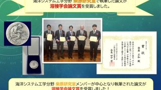
受賞報告： 柴原研究室・生島研究室 メンバーが「溶接学会春季全国大会」において受賞した「溶接学会論文賞」に関する記事が、大阪公立大学工学部公式Xおよび工学部公式Webサイトに掲載されました。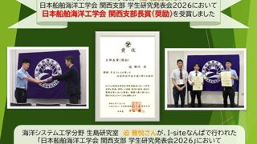
受賞報告： 生島研究室の迫 雅悦さんが「日本船舶海洋工学会 関西支部 学生研究発表会2026」において受賞された「関西支部長賞（奨励）」が、大阪公立大学工学部公式Xおよび工学部公式Webサイトに掲載されました。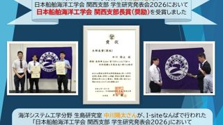
受賞報告： 生島研究室の中川陽太さんが「日本船舶海洋工学会 関西支部 学生研究発表会2026」において受賞された「関西支部長賞（奨励）」が、大阪公立大学工学部公式Xおよび工学部公式Webサイトに掲載されました。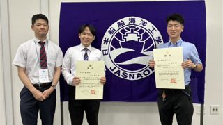
受賞：生島研究室 中川 陽太さん、迫 雅悦さんが、I-siteなんばで行われた「日本船舶海洋工学会 関⻄⽀部 学生研究発表会2026」において日本船舶海洋工学会 関西支部長賞(奨励)を受賞しました。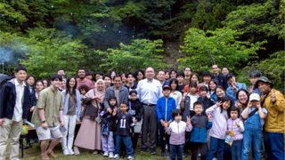
報告：5月6日に毎年恒例の柴原研・生島研合同BBQ大会が開催され、本年も、50名ほどの方にご参加頂きました。 受賞：溶接学会(大阪大学中之島センター)にて溶接学会総会があり、柴原研究室で執筆した論文「ガス加熱時の入熱パラメータが変形に及ぼす影響」が「溶接学会論文賞」を受賞しました。
受賞：溶接学会(大阪大学中之島センター)にて溶接学会総会があり、柴原研究室で執筆した論文「ガス加熱時の入熱パラメータが変形に及ぼす影響」が「溶接学会論文賞」を受賞しました。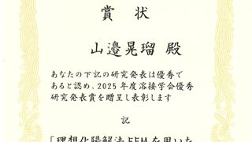
受賞：溶接学会(大阪大学中之島センター)にて溶接学会総会があり、柴原研究室 OB 山邉晃瑠 さん(現日本郵船)が「溶接学会優秀研究発表賞」を受賞しました！- お知らせ：4月1日より、柴原・生島は大阪大学接合科学研究所 (地球総合工学科 船舶海洋工学コース 協力講座) へ異動いたしました。
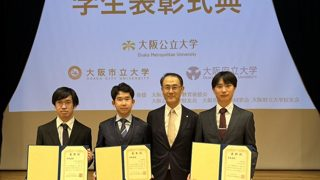
受賞：柴原研究室 M2 市川亮大 さん、M2 山邉晃瑠 さん、B4 山本航平 さん が、「2025年度 大阪公立大学 学長表彰」を受けました。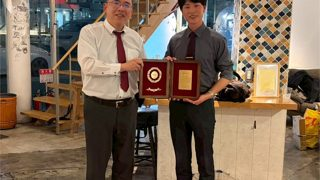
受賞：柴原研究室 M2 山邉晃瑠 さんが「2025年度 溶接学会奨学賞」を受賞しました。- 受賞：卒業証書・修了証書 授与式において、M2 市川亮大 さん、B4 山本航平 さんが「最優秀論文賞」、「日本船舶海洋工学会 奨学褒賞」をW受賞しました！ M2 山邉晃瑠 さんが「優秀論文賞」、B4 横山侑祐 さん、B4 清水大毅 さん が「奨励賞 」をそれぞれ受賞しました！
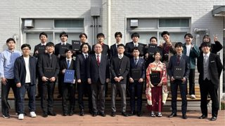
報告：2026/03/24に大阪公立大学 工学部/研究科 海洋システム工学科/専攻 学位記授与式 が行われました。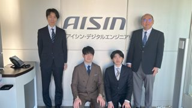
報告：柴原正和 教授、武本幸生 特任准教授、前田新太郎 特任助教、B4 井上正貴 さんが、株式会社アイシン・デジタルエンジニアリング を訪問しました。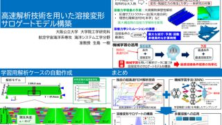
報告：3月13日に 京都大学 に隣接する 日本材料学会 で行われた 第74期 第5回デジタル材料工学部門委員会 において、生島一樹 准教授 が講演しました。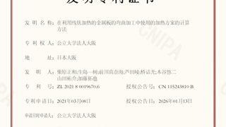
特許：柴原正和 教授、生島一樹 准教授、前川真奈海さん(現川崎重工業)、芦田崚さん(現日揮)、橋詰光さん(現NEC)、木谷悠二さん(現DMG森精機)、山田祐介さん(現シマノ)、D3加藤拓也 さんが「線状加熱」 に関する国際特許(中国)を取得しました。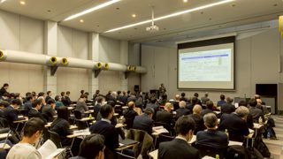
報告：前田新太郎 特任助教とOB 木谷悠二 さん (現DMG森精機)が 大阪大学 接合科学研究所 CCWS主催の講演会において発表しました。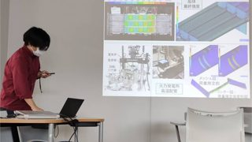
報告：生島研究室 D2 山内悠暉 さんが中百舌鳥キャンパス・研究サポートセンターで行われた『2025年度ワークショップ「『博士』のキャリア』第7回報告会 において講演しました。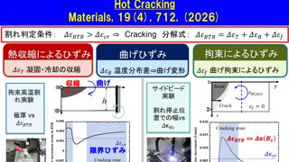
論文：王 聞達 さんが主著として執筆し、 Materials (Impact Factor 3.5) に投稿していた論文がPublishされました。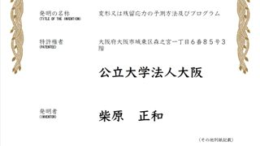
特許：柴原正和 教授、生島一樹 准教授、前田新太郎 特任助教、D3 加藤拓也 さん、手銭永遠 さん(現Kanadevia)、安田匠吾さん(現クボタ)、李志浩さんが、修正熱収縮法に関する特許を取得しました。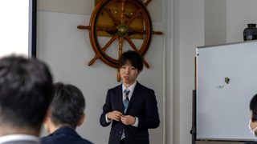
報告：2/26(木)-27(金)に、博士論文公聴会が開催され、加藤拓也 君および 王 聞達 君が発表を行いました。いずれの発表においても活発な議論が交わされました。- 報告：研究室にて 生島一樹 准教授の誕生日会を行いました。
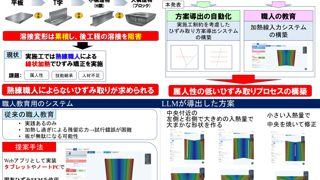
報告：柴原研究室 B4 山本航平 さん、生島研究室 M1 中川陽太 さんが、大阪公立大学中百舌鳥キャンパスで行われた 2025年度第2回「次世代船舶開発のための基礎要素技術に関する研究報告会」 において講演を行いました。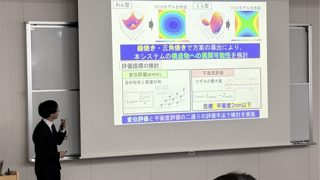
報告：2/10(火)-13(金)に、卒業論文・修士論文発表会が行われ、本年度も素晴らしい発表と活発な議論が交わされました！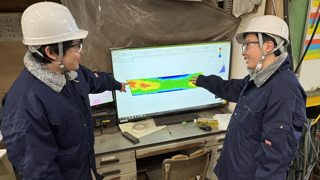
報告：JMU津事業所を訪問し、柴原研究室と共同開発している AI 線状加熱ロボットの製造現場における運用状況を見学しました。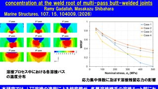
論文：Ramy Gadallah 先生が執筆し、 Marine Structures (Impact Factor 5.1) に投稿していた論文がPublishされました。同誌は同分野のTop14%に入るJournalになります。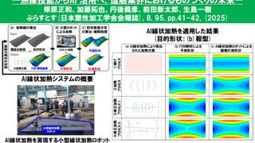
記事掲載：柴原正和 教授、加藤拓也 さん 他が執筆した、開発中の「AI線状加熱」に関する解説記事が「ぷらすとす(日本塑性加工学会会報誌)」に掲載されました。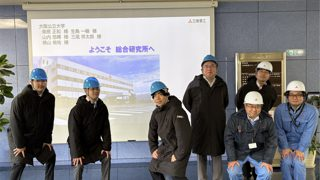
報告：三菱重工業 総合研究所(長崎地区) を訪問し、水素製造、アンモニア燃焼、CO2回収等に関する研究施設について見学を行いました。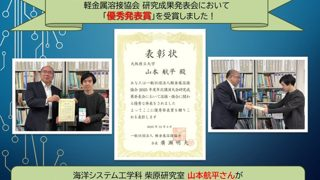
受賞報告：先日、柴原研究室 山本航平 さんが 軽金属溶接協会 において受賞した「優秀発表賞」につきまして、大阪公立大学 工学部公式X および 工学部公式Webサイト に掲載されました。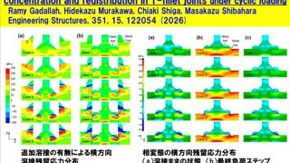
論文：Ramy Gadallah 先生が執筆し、 Engineering Structures (Impact Factor 6.4) に投稿していた論文がPublishされました。同誌は同分野のTop9%に入るJournalになります。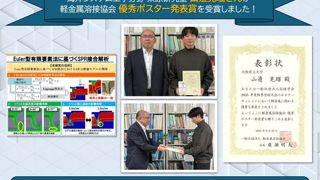
受賞報告：先日、柴原研究室 山邉晃瑠 さんが 軽金属溶接協会 において受賞した件につきまして、大阪公立大学 工学部公式X および 工学部公式Webサイト に掲載されました。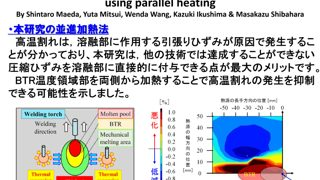
論文：柴原研究室 前田新太郎 特任助教 にて執筆した「並進加熱法」に関する論文、および、D3 王聞達 さんが執筆した「修正熱収縮法」に関する論文が学術誌「Welding International」に掲載されましたのでご報告いたします。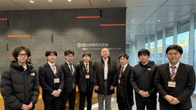
報告：日立建機 土浦工場 を訪問し、建機構造体の製造について見学を行いました。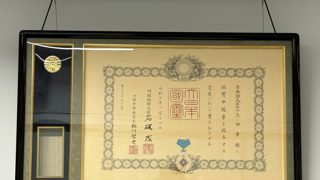
報告：上田幸雄 先生の叙位叙勲のご報告- 報告：1月4日(土)に新年恒例の新世界の会が開催されました。
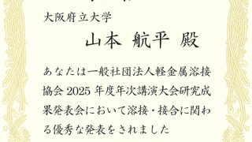
受賞：柴原研究室 B4山本航平さんが、軽金属溶接協会 研究成果発表会 において、「優秀発表賞」を受賞しました！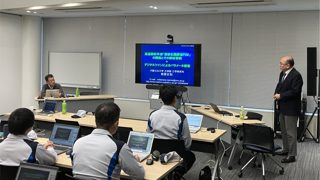
報告：柴原正和教授が、ダイキン工業 TIC (テクノロジー・イノベーションセンター) において、大規模溶接解析および溶接・ガス加熱工程のデジタルツインに関する講演を行いました。- 謹賀新年 新年明けましておめでとうございます。
2025年（107件）
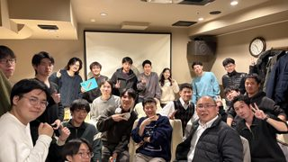
報告：12/29に正岡研・柴原研・生島研会が開催されました。 報告：柴原研究室・生島研究室合同の冬季中間発表会が行われました。FEM等の数値シミュレーションを活用した溶接、接合、ひずみ取り、プレス、切削、金属積層造形、AI、デジタルツイン等に関する幅広い内容の研究発表が行われ、活発な議論がなされました。
報告：柴原研究室・生島研究室合同の冬季中間発表会が行われました。FEM等の数値シミュレーションを活用した溶接、接合、ひずみ取り、プレス、切削、金属積層造形、AI、デジタルツイン等に関する幅広い内容の研究発表が行われ、活発な議論がなされました。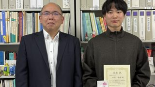
報告：柴原研究室 山邉晃瑠さんが 「溶接学会秋季大会 軽金属溶接協会 優秀ポスター発表賞」 を受賞しました。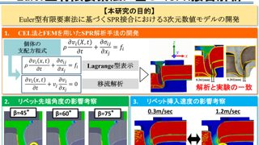
報告：「軽金属溶接協会 2025年研究成果発表会」 において、柴原研究室から、山本航平さん、山邉晃瑠さん が発表しました。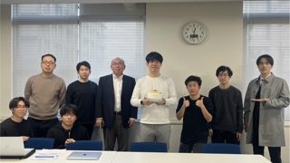
報告：前田新太郎 特任助教 のお誕生日会を行いました。 報告：JMU津事業所を訪問し、柴原研究室と共同開発している AI 線状加熱ロボットの製造現場における運用状況を見学しました。
報告：JMU津事業所を訪問し、柴原研究室と共同開発している AI 線状加熱ロボットの製造現場における運用状況を見学しました。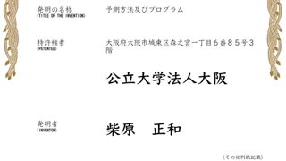
特許：柴原正和 教授、D3 加藤拓也 さん、生島一樹 准教授、前田新太郎 特任助教、D2 山内悠暉 さんが、機械学習を用いた固有変形決定方法に関する特許を取得しました。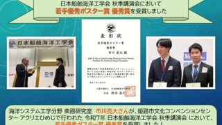
受賞報告：先日、柴原研究室 市川亮大 さんが 日本船舶海洋工学会 において受賞した件につきまして、大阪公立大学 工学部公式X および 工学部公式Webサイト に掲載されました。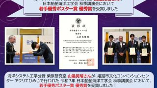
受賞報告：先日、柴原研究室 山邉晃瑠 さんが 日本船舶海洋工学会 において受賞した件につきまして、大阪公立大学 工学部公式X および 工学部公式Webサイト に掲載されました。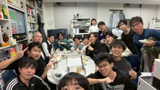
報告：柴原正和 教授の誕生日会を研究室にて行いました。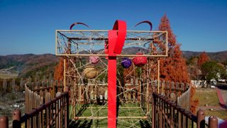
報告：研究室旅行2日目：「ドイツの森」にて大型ブランコや動物とのふれあい、ハーバリウム作りなどを体験しました。また、「日本一のだがし売り場」にも立ち寄り、懐かしい駄菓子を思う存分買い込んでいました。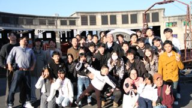
報告：研究室旅行初日：11/29-30に柴原研・生島研合同で研究室旅行に出かけました。今年は岡山の旅です。初日は作東バレンタインホテルで昼食後に津山学びの鉄道館などに行き、クラフトホテルあば村ではBBQも行い星空ツアーにも出かけました。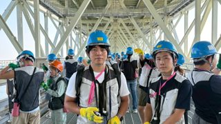
報告：柴原研究室 B4清水大毅さんとB4横山侑祐さんが 日本船舶海洋工学会誌KANRINに「明石海峡大橋ブリッジワールドを訪ねて」という記事を寄稿し掲載されました。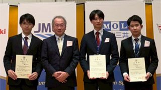
受賞：柴原研究室 M2 市川亮大さんと M2 山邉晃瑠 さんが、11月11日、12日に行われた日本船舶海洋工学会秋季講演会 ポスターセッションにおいて、「若手優秀ポスター賞 優秀賞」を受賞しました！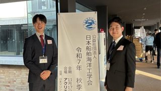
報告：11月11日、12日に日本船舶海洋工学会秋季講演会があり、柴原研究室 M2 市川亮大さんと M2 山邉晃瑠 さんが、ポスター発表を行いました。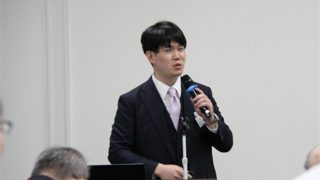
報告：前田新太郎 特任助教が l-siteなんばで行われた『第150回テクノラボツアー 「デジタルツイン」が拓く近未来社会、その先にあるもの』にて講演しました。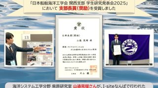
報告：柴原研究室 山邉晃瑠さんが、日本船舶海洋工学会 関西支部 学生研究発表会2025 において、支部長賞(奨励)を受賞した旨が、工学研究科HPおよびXに掲載されました。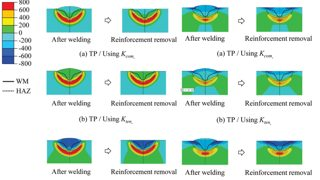
技術論文：社会人ドクター(D2)の 橋場大輔 さんが 日本製鋼所技報 に寄稿しましたのでご報告させて頂きます。 報告：第18回大阪公立大学－新来島サノヤス造船 技術交流会に 柴原研究室から 山邉晃瑠さん、清水大毅さん、原田青空さん、横山侑祐さん、生島研究室から 生島一樹 准教授、中川陽太さん、井上正貴さん、岡田頼騎さん、 藤本陽紀さん、高橋侑也さん が参加しました。
報告：第18回大阪公立大学－新来島サノヤス造船 技術交流会に 柴原研究室から 山邉晃瑠さん、清水大毅さん、原田青空さん、横山侑祐さん、生島研究室から 生島一樹 准教授、中川陽太さん、井上正貴さん、岡田頼騎さん、 藤本陽紀さん、高橋侑也さん が参加しました。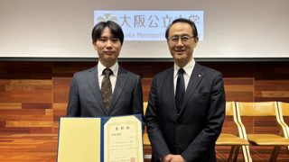
受賞：大阪公立大学 杉本キャンパス 140周年記念講堂 において表彰式があり、柴原研究室M2 山邉晃瑠 さんが浮体式洋上風力発電の設計開発コンペである FWC日本代表 としての功績を称えられ学長表彰を受けました。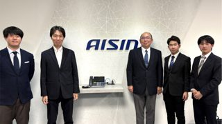
報告：柴原正和 教授、武本幸生 特任准教授、前田新太郎 特任助教、M2 市川 亮大 さん、B4 井上正貴 さんが、株式会社アイシン を見学しました。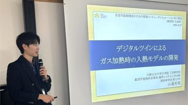
柴原研究室 山邉晃瑠さん、市川亮大さんが、大阪公立大学中百舌鳥キャンパスで行われた 2025年度第1回「次世代船舶開発のための基礎要素技術に関する研究報告会」 において講演を行いました。- 受賞：柴原研究室 山邉晃瑠さんが、I-siteなんばで行われた「日本船舶海洋工学会 関⻄⽀部 学生研究発表会2025」において日本船舶海洋工学会 関西支部長賞(奨励)を受賞しました。
- 報告：柴原研究室 山邉晃瑠さん、市川亮大さん、生島研究室 諏訪部圭夏さん、中川陽太さんが、I-siteなんばで行われた「日本船舶海洋工学会 関⻄⽀部 学生研究発表会2025」においてポスター発表を行いました。
 特許：柴原正和 教授、生島一樹 准教授、前川真奈海さん(現川崎重工業)、芦田崚さん(現日揮)、橋詰光さん(現NEC)、木谷悠二さん(現DMG森精機)、山田祐介さん(現シマノ)が「線状加熱」 に関する国際特許(中国)を取得しました。
特許：柴原正和 教授、生島一樹 准教授、前川真奈海さん(現川崎重工業)、芦田崚さん(現日揮)、橋詰光さん(現NEC)、木谷悠二さん(現DMG森精機)、山田祐介さん(現シマノ)が「線状加熱」 に関する国際特許(中国)を取得しました。- 報告：柴原正和 教授、生島一樹 准教授、前田新太郎 特任助教、D2 山内悠暉 さん、 M2 佐々木駿伍 さん、B4 横山侑祐 さん、B4 井上正貴 さん が、「新型転換炉原型炉ふげん」を見学しました。
- 特許：柴原正和 教授、生島一樹 准教授、OB三ッ井佑太さん、前田新太郎 特任助教らが、独自に開発した「並進加熱法」に関する特許を取得しました。
 柴原研究室・生島研究室合同の秋季中間発表会が行われました。FEM等の数値シミュレーションを活用した溶接、接合、ひずみ取り、プレス、切削、AI、デジタルツイン等に関する幅広い内容の研究発表が行われ、活発な議論がなされました。
柴原研究室・生島研究室合同の秋季中間発表会が行われました。FEM等の数値シミュレーションを活用した溶接、接合、ひずみ取り、プレス、切削、AI、デジタルツイン等に関する幅広い内容の研究発表が行われ、活発な議論がなされました。- 報告：山内悠暉さん(生島研究室)が、研究者の登竜門とされる 日本学術振興会特別研究員（DC2） に採択されました。
- 報告：9/23-26の期間、新潟県燕三条で行われた溶接学会春季全国大会において、以下の11件の発表を行いました。
- 報告：オーストリアGrazで行われた国際会議14th International Seminar on Numerical Analysis of Weldabilityに、柴原研究室から前田新太郎 特任助教、D3王聞達 さん の2件が論文発表しました。
- 論文：Ramy先生が執筆し、 Engineering Structures (Impact Factor 6.4) に投稿していた論文がPublishされました。同誌は同分野のTop8%に入るJournalになります。
- 報告：柴原正和 教授が勤続20年の表彰を受けました。
- 報告：生島一樹 准教授が、第1回 KSAC-GAPファンドの成果発表イベントに参加されました。
- 論文：柴原正和 教授、生島一樹 准教授 らが共著でWelding in the World (IF2.5)に投稿していた論文がPublishされましたのでお知らせ致します。
- 報告：柴原正和教授がNK(日本海事協会)の「ClassNK RIワークショップ」にて講演しました。
- 特許：柴原正和 教授、生島一樹 准教授、前川真奈海さん(現川崎重工業)、芦田崚さん(現日揮)、橋詰光さん(現NEC)、木谷悠二さん(現DMG森精機)、山田祐介さん(現シマノ)が「線状加熱」 に関する国際特許(韓国)を取得しました。
- 報告：柴原研究室 清水大毅さんと横山侑祐君が、日本船舶海洋工学会の学会誌「KANRIN」の突撃取材のため、明石海峡大橋「ブリッジワールド」および「橋の科学館」を訪問しました。
- 報告：柴原研究室 Ramy 特任准教授が、 Journal of Pipeline Science and Engineering の青年編集委員に選出されましたので報告致します。
 特許：柴原正和 教授、生島一樹 准教授、河原充 特任研究員、竹内梨乃さん(現 三菱重工)、橋詰光さん(現 NEC)が「金属3D積層造形解析」 に関する 国際特許(アメリカ合衆国)を取得しました。
特許：柴原正和 教授、生島一樹 准教授、河原充 特任研究員、竹内梨乃さん(現 三菱重工)、橋詰光さん(現 NEC)が「金属3D積層造形解析」 に関する 国際特許(アメリカ合衆国)を取得しました。- 報告：8月25日～28日に沖縄県 琉球大学で行われたDynamics and Design Conference 2025 (D&D2025) に、柴原研究室・生島研究室から前田新太郎 特任助教、M2 佐々木駿伍さんが講演しました。
- 記事掲載：柴原正和 教授 と 生島一樹 准教授 が システム制御情報学会誌「システム／制御／情報」に寄稿していた解説記事がPublishされました。
 論文：溶接学会論文集に投稿していた14本の論文が本年7月に採択されました。今回は、その中から【AI線状加熱およびデジタルツインに関する研究】に関する5本の論文をご紹介いたします。
論文：溶接学会論文集に投稿していた14本の論文が本年7月に採択されました。今回は、その中から【AI線状加熱およびデジタルツインに関する研究】に関する5本の論文をご紹介いたします。- 報告：公明新聞の第6面に、「柴原研究室・生島研究室」ならびに大阪公立大学発ベンチャー企業「株式会社エスアイテック」の取り組みが掲載されました。
 論文：溶接学会論文集に投稿していた14本の論文が本年7月に採択されました。今回は、その中から【FSW解析および高温割れ解析に関する研究】に関する5本の論文をご紹介いたします。
論文：溶接学会論文集に投稿していた14本の論文が本年7月に採択されました。今回は、その中から【FSW解析および高温割れ解析に関する研究】に関する5本の論文をご紹介いたします。- 報告：昨日、上田幸雄先生がご逝去されました。上田先生のご冥福を心よりお祈り申し上げます。
- 受賞：柴原研究室 M2 山邉晃瑠さんが、国際学会International Seminar on Welding Science and Engineering 2025 (WSE2025) において、Outstanding Presentation Award を受賞しました！！
 報告：8/10に中国北京市で行われましたInternational Seminar on Welding Science and Engineering 2025 (WSE2025) において柴原研究室 前田新太郎 特任助教とM2山邉晃瑠さんが国際会議発表を行いました。
報告：8/10に中国北京市で行われましたInternational Seminar on Welding Science and Engineering 2025 (WSE2025) において柴原研究室 前田新太郎 特任助教とM2山邉晃瑠さんが国際会議発表を行いました。 報告：8/10 オープンキャンパス2025(2日目)が開催されました。海洋システム工学科「構造系」の実験が行われましたので紹介します！
報告：8/10 オープンキャンパス2025(2日目)が開催されました。海洋システム工学科「構造系」の実験が行われましたので紹介します！- 報告：8/9にオープンキャンパス2025(1日目)が開催されました。海洋システム工学科「構造系」の実験の様子を紹介します。
 論文：溶接学会論文集に投稿していた14本の論文が本年7月に採択されました。採択されました。今回は、その中から【溶接変形およびガス加熱時の熱変形に関する研究】に関する4本の論文をご紹介いたします。
論文：溶接学会論文集に投稿していた14本の論文が本年7月に採択されました。採択されました。今回は、その中から【溶接変形およびガス加熱時の熱変形に関する研究】に関する4本の論文をご紹介いたします。- 受賞：日本保全学会第21回学術講演会「学生セッション」において、柴原研究室 B4清水大毅さん、B4原田青空さん、B4横山侑祐さんが講演およびポスター発表を行い、「奨励賞」を受賞しました。
- 記事掲載：生島一樹 准教授 と 柴原正和 教授 が 「配管技術」に寄稿していた解説記事がPublishされました。
- 報告：「学生実験」続報：溶接ロボットを用いて、線状加熱による“曲線焼き”を再現！ 熟練技能者の技をロボットで実現しました。
 報告：柴原研究室 B4 清水大毅さん、B4 原田青空さん、B4 横山侑祐さん が「海洋システム特殊講義」という授業の一環として新来島サノヤス造船にて工場実習を行いました。
報告：柴原研究室 B4 清水大毅さん、B4 原田青空さん、B4 横山侑祐さん が「海洋システム特殊講義」という授業の一環として新来島サノヤス造船にて工場実習を行いました。- 報告：柴原研究室 B4 山本航平 さんと B4 横山侑祐 さんが大阪大学接合科学研究所で行われた「マルチマテリアル構造技術及び構造材料の開発技術者養成に係る特別講座」に参加しました。
 報告：ポルトガルで行われる4th International Conference on Advanced Joining Processes (AJP2025)という国際会議に、熊本大学 寺崎研究室と共著で、柴原研究室から1件の発表をエントリーしました。
報告：ポルトガルで行われる4th International Conference on Advanced Joining Processes (AJP2025)という国際会議に、熊本大学 寺崎研究室と共著で、柴原研究室から1件の発表をエントリーしました。- 報告：本年度も大阪公立大学工学部海洋システム工学科では、学生主体で実験内容を考える「学生実験」が行われています。
- 報告：日本製鋼所(JSW，北海道・室蘭)にて技術交流会を行いました。
- 報告：8月25日～28日に沖縄県琉球大学で行われます Dynamics and Design Conference 2025 (D&D2025) に、柴原研究室・生島研究室から前田新太郎特任助教、M2佐々木駿伍さんの2件の講演をエントリーしました。
- 報告：大阪関西万博に行ってきました！
- 報告：9月24日～26日に新潟県三条市で行われる「溶接学会2025年度秋季全国大会(第117回)」に、柴原研究室から D3加藤拓也さん、王聞達さん、D1橋場大輔さん、M2佐々木駿伍さん、山邉晃瑠さん、B4清水大毅さん、原田青空さん、横山侑祐さん、山本航平さん の計11件の発表をエントリーしました。
- 報告：8月8日～11日に中国北京で行われる10th International Conference on Welding Science and Engineering (WSE2025)という国際会議に、柴原研究室から M2 山邉晃瑠 さん、前田新太郎 特任助教 の講演をエントリーしました。
- 報告：6月1日付で、柴原正和 先生が 大阪大学 接合科学研究所 の 招聘教授 を兼務されることになりました。
- 報告：オーストリアで行われる14th International Seminar on Numerical Analysis of Weldabilityという国際会議に、柴原研究室から2件の発表をエントリーしました。
 特許：JSTの知財活用支援事業に採択され、JSTよりPCT出願（国際特許出願）に関する支援を受けることが決定いたしました。発明の名称は、「摩擦攪拌接合(FSW)の解析方法及びプログラム」です。
特許：JSTの知財活用支援事業に採択され、JSTよりPCT出願（国際特許出願）に関する支援を受けることが決定いたしました。発明の名称は、「摩擦攪拌接合(FSW)の解析方法及びプログラム」です。 報告：6/1付けで 柴原研究室 武本幸生 先生が、特任准教授にご着任されました。
報告：6/1付けで 柴原研究室 武本幸生 先生が、特任准教授にご着任されました。- 報告：柴原研究室と生島研究室の合同による、毎年恒例の就職内定祝いボウリング大会が開催されました。
- 報告：5/22ｰ24に行われたバリシップ2025に、柴原研究室 M1横山暁生さんとM1原田茂汰さんが参加しました。
- 報告：7/29-8/1に島根大学で行われる「日本保全学会第21回学術講演会」に、柴原研究室から3件の講演(清水大毅さん、原田青空さん、横山侑祐さん)がエントリーしました。
 報告：第1回関西スマート工場EXPOに参加し、最新のIoT/ロボット機器等について見学しました。
報告：第1回関西スマート工場EXPOに参加し、最新のIoT/ロボット機器等について見学しました。- 報告：先日溶接学会にて授賞式がありました「溶接学会論文賞」の記事が、工学部公式X（旧Twitter）および工学部公式Webサイトに掲載されました。
- 報告：2025年5月1日付で、武本幸生先生を新たに研究室メンバーとしてお迎えいたしました。
- 報告：5月4日に毎年恒例の柴原研・生島研合同BBQ大会が開催され、本年も、40名を超える多くの方にご参加頂きました。
- 報告：計算科学研究所 第10回研究交流会が行われ、柴原研究室 D3加藤拓也さんが、現在開発中の「熟練技能を代替する高速なFEMサロゲートモデル」について講演しました。
- 受賞：柴原研究室 廣瀬天空さん(2024年度M2) が 2025年度 大阪公立大学 工学研究科 TOEIC英語顕彰 を受賞しました。
- 報告：溶接学会2025年度春季全国大会が一橋大学(東京)で行われ、柴原研究室・生島研究室から9件の発表を行いました。
- 受賞：溶接学会(東京、一橋大学)にて溶接学会総会があり、柴原研究室 橋場さん(D1、日本製鋼所)らが「溶接学会論文賞」を受賞しました！
- 報告：4月19日(土)20日(日)に『学外合宿2025』(大阪公立大学 海洋システム工学科) が行われ、山邉晃瑠 さんが柴原研究室の研究室紹介を行いました。
- 報告：4月16日に大阪公立大学 工学部 海洋システム工学科で2年生向けに施設見学が行われ、山邉晃瑠さんが構造系の実験設備について説明されました。
- 報告：4月15日に海洋科学技術センター「次世代船舶開発のための基礎要素技術に関する研究」講演会において、前田新太郎 特任助教が登壇しました。
- 記事掲載：柴原正和 教授および生島一樹 准教授による解説記事「柴原研究室・生島研究室の取り組み」が、保全学会誌の特集に掲載されました。
- 報告：4月6日、柴原正和先生の教授ご昇任を祝う会が開催されました。
- 報告：4月6日に第9回海洋構造研究会行われました。
- 報告：4月3日（木）に大阪公立大学の入学式が執り行われました。
- 報告：柴原正和先生が教授に昇任されました
- 受賞：柴原研究室 M1山邉晃瑠さん が2024年度 大阪公立大学 工学研究科長 表彰 を受けました。
- 受賞： M2油井達哉 さん、M2 出口皓太さん (生島研) が、大阪公立大学 海洋システム工学分野 奨励賞 を受賞しました。
- 受賞： 柴原研究室 B4横山暁生 さん が大阪府立大学 海洋システム工学課程 優秀論文賞、 B4原田茂汰さんが 奨励賞 を受賞しました。
- 報告：2025/03/24に大阪公立大学 工学部/研究科 海洋システム工学科/専攻 学位記授与式 が行われました。
- 受賞：柴原研究室 D2加藤拓也さん、D2王聞達さん、D1永木勇人さん、D1橋場大輔さん、D1山内悠暉さん(生島研) が 2024年度 大阪公立大学 学長表彰を受けました。
- 報告：3/12に新B4生歓迎会を開催しました。
- 佐々木駿伍さん(生島研究室)が2024年度溶接学会奨学賞を受賞しました。
- お願い：「チームMOZU」へのご支援のお願い
- 報告：研究室にて 生島一樹 准教授の誕生日会を行いました。
- 特許：柴原正和 准教授、生島一樹 准教授、OG沖見優衣さん、D2 加藤拓也 さん、OB河尻義貴さんらが「残留応力低減方法及び残留応力低減装置」に関する特許を取得しました。
- 報告：2/12(水)-14(金)に、卒業論文・修士論文発表会が行われました！
- 報告：桃木さんのお誕生日会を行いました！
- 報告：柴原研究室 山邉晃瑠 さんが代表を務めるチーム「MOZU」が日本代表として、ベルギーで開催される「Floating Wind Challenge 2025」に出場することが決定しました！！
- 報告：生島一樹 准教授が I-siteなんばで行われた 『大阪公立大学 ia-WS (イノベーションアカデミー ワークショップ)』に登壇しました。
- 報告：昨年末に、けがのため帰省していた四方皓大さんが、このたび復帰しました。
 報告：日刊工業新聞一面記事に掲載されたAI線状加熱(柴原研究室開発のシミュレーター)の内容がWeb版にも掲載されました。
報告：日刊工業新聞一面記事に掲載されたAI線状加熱(柴原研究室開発のシミュレーター)の内容がWeb版にも掲載されました。- 報告：2025年4月22日～24日に学術総合センター(東京)で行われる「溶接学会春季全国大会」に、柴原研究室・生島研究室 から8件の講演をエントリーしました。
- 論文：柴原研究室 Ramy 特任准教授と柴原正和 准教授が共著でJournal of Constructional Steel Research (IF4.0)(Top14%Journal)に投稿していた論文がPublishされましたのでお知らせ致します。
- 報告：1月4日(土)に新年恒例の新世界の会が開催されました。
- 報告：柴原研究室 山邉晃瑠 さんが日本財団オーシャンイノベーションコンソーシアム主催のPBLにおいて優秀賞を受賞しました。
- 謹賀新年 新年明けましておめでとうございます。
2024年（106件）
- 報告：12/27に正岡研・柴原研・生島研会が開催されました。
- 報告：柴原研究室・生島研究室合同の秋季中間発表会が12/26と12/27に行われました。
- 論文：柴原研究室 Ramy 特任准教授と柴原正和 准教授が共著でJournal : Thin-Walled Structures (IF5.7)(Top8%Journal)に投稿していた論文がPublishされましたのでお知らせ致します。
- 報告：12月14日は前田新太郎先生の誕生日で、研究室で誕生日会を行いました。
 国際特許：柴原研究室の国際特許(デジタルツイン)がJSTによるヒアリング審査を経て、アメリカ、中国、ドイツ、イギリス、フランスの5カ国への移行支援が決定しました。
国際特許：柴原研究室の国際特許(デジタルツイン)がJSTによるヒアリング審査を経て、アメリカ、中国、ドイツ、イギリス、フランスの5カ国への移行支援が決定しました。 報告：柴原正和 准教授、生島一樹 准教授、前田新太郎 特任助教、B4 横山暁生 さん、B3 山本航平 さんが 共同研究先である 川崎重工業 明石工場 技術開発本部 を訪問し、FSW試験について見学を行いました。
報告：柴原正和 准教授、生島一樹 准教授、前田新太郎 特任助教、B4 横山暁生 さん、B3 山本航平 さんが 共同研究先である 川崎重工業 明石工場 技術開発本部 を訪問し、FSW試験について見学を行いました。- 研究室旅行2日目：彦根城やメタセコイア並木、黒壁スクエアを巡り、琵琶湖一周の旅を満喫しました。
- 研究室旅行初日：12/7-8に柴原研・生島研合同で研究室旅行に行きました。今年は滋賀の旅です。初日は三井寺などに行きました。
 報告：前田新太郎 特任助教、M2 幅田真史 さん、M1 四方皓大 さん、B4 横山暁生 さんが 共同研究先である 日産自動車 追浜工場 を訪問し、スポット溶接試験について見学を行いました。
報告：前田新太郎 特任助教、M2 幅田真史 さん、M1 四方皓大 さん、B4 横山暁生 さんが 共同研究先である 日産自動車 追浜工場 を訪問し、スポット溶接試験について見学を行いました。- 報告：11/21-22に 横浜市開港記念会館 で行われた「日本船舶海洋工学会 令和6年 秋季講演会」において、前田新太郎 特任助教 が講演しました。
 特許：柴原正和 准教授、D2 加藤拓也 さん、生島一樹 准教授、前田新太郎 特任助教 らが「線状加熱時における加熱方案作成方法」に関する特許を取得しました。
特許：柴原正和 准教授、D2 加藤拓也 さん、生島一樹 准教授、前田新太郎 特任助教 らが「線状加熱時における加熱方案作成方法」に関する特許を取得しました。- 報告：加藤拓也さんと佐々木駿伍さん(生島研)がJMU 津事業所を訪問しNEDOインテグレート「AI線状加熱の開発」に関する現地調査会にオブザーバー参加しました。
- 報告：🛳️柴原研究室のX(Twitter)が✨✨🎊フォロワー5000人突破🎊✨✨しましたー！🎉🎉
- 特許：柴原正和准教授、生島一樹准教授、前川真奈海さん(現川崎重工) らが「線状加熱による金属板の曲げ加工に用いる加熱方案の算出方法」に関する特許を取得しました。
- 報告 : 生島一樹 准教授が「大学発新産業創出基金事業 スタートアップ・エコシステム共創プログラム「KSAC-GAPファンド OD」に採択されました。
- 受賞：柴原研究室 M2松岡諒、B3山本航平 が大阪府立大学/大阪公立大学 学長表彰を受けました。
- 報告：第17回大阪公立大学－新来島サノヤス造船 技術交流会に 柴原研究室、生島研究室から、柴原正和 准教授、三尾祥太郎さん、原田茂汰さん、山本航平さん、横山暁生さん、渡邉倖平さん (柴原研)、 熊田裕之さん、石本桃雅さん、迫雅悦さん (生島研) が参加しました。
- 柴原研究室の最近のTopicstopics 論文：柴原研究室 にて執筆していたクリープ疲労寿命予測に関する論文が、学術誌「Welding International」に掲載されました！
- 報告：日立建機 土浦工場 を訪問し、建機構造体の製造について見学を行いました。
- 柴原研究室 山邉晃瑠 さんが長崎県五島市の浮体式洋上風力発電 を見学しました。
- 柴原研究室 横山暁生 さんが10/13に名村造船所で行われた大型船見学会に参加しました。
- 10/10に I-siteなんば で行われた「日本船舶海洋工学会 関西支部 学生研究発表会」において、柴原研・生島研から M2廣瀬天空さん、B4熊田裕之さん、B3山本航平さんの3名が発表しました。
- 柴原正和准教授 と 生島一樹准教授 が 砥粒加工学会「Abrasive Technology」に寄稿していた解説記事がPublishされました。
- 柴原正和 准教授 と 生島一樹 准教授 が 溶接学会誌の特集に寄稿していた解説記事がPublishされました。
- 9/25-28に広島・呉で行われた国際会議TEAM2024において、柴原研究室 加藤拓也 さんと 生島研究室 山内悠暉 さんが講演しました。
- 柴原研究室・生島研究室合同の秋季中間発表会が9/28と9/29に行われました。
- 『日刊工業新聞一面』に掲載された内容が、大阪公立大学 X(Twitter), Facebook, 工学研究科 HP, X(Twitter)に掲載されました。
- 柴原研究室 山邉晃瑠さんが、ノルウェー科学技術大学（NTNU）での1ヶ月間の留学を無事に終え、先日帰国いたしました。
- ジャパンマリンユナイテッド(JMU)と柴原研究室とで行われたNEDOインテグレート「AI線状加熱の開発」の取り組みが『日刊工業新聞一面』に掲載されました。
- 高田機工(株)和歌山工場を訪問し、橋梁の製造現場を見学をしました。
- 柴原正和 准教授 が日本溶接協会 AM部会のメンバーと共著で『-入門- 金属3Dプリンター技術』(産報出版) を執筆・発刊しました。
- 柴原研究室の国際特許(修正熱収縮法)がJSTによるヒアリング審査を経て、米国、ドイツ、フランス、中国、フィンランド、オランダの6カ国への移行支援が決定しました。
- 溶接学会2024年度秋季全国大会が 北海道科学技術大学 で行われ、柴原研究室・生島研究室から12件の発表を行いました。
- 明石北高校の皆さんが研究室見学のため訪問されました。
 生島一樹准教授 らが「マーカー粒子を用いたEuler型FEMを用いたFSW解析手法」に関する特許出願を行いました。
生島一樹准教授 らが「マーカー粒子を用いたEuler型FEMを用いたFSW解析手法」に関する特許出願を行いました。- 柴原研究室 松岡諒さん、山本航平さんの日本保全学会における受賞内容が、大阪公立大学工学HPに掲載されました。
 ノルウェー科学技術大学(NTNU)に留学中の柴原研究室M1山邉晃瑠さんから留学体験記について報告がありました。
ノルウェー科学技術大学(NTNU)に留学中の柴原研究室M1山邉晃瑠さんから留学体験記について報告がありました。- 柴原研究室 加藤拓也さん らがGNNを用いた溶接力学の高速化に関する特許出願を行いました。
- 新構造実験室でのロボット溶接実験の写真
 ノルウェー科学技術大学(NTNU)に留学中の柴原研究室M1山邉晃瑠さんから留学体験記について報告がありました。
ノルウェー科学技術大学(NTNU)に留学中の柴原研究室M1山邉晃瑠さんから留学体験記について報告がありました。- 日本保全学会第20回学術講演会「学術セッション」において、柴原研究室 松岡諒さんが「優秀賞」、山本航平さんが「独創賞」、王聞達さんが「奨励賞」を受賞しました。
- 8/12 オープンキャンパス2024(2日目)が開催されました。海洋システム工学科「構造系」の実験が行われましたので紹介します！
- 8/11にオープンキャンパス2024(1日目)が開催されました。海洋システム工学科「構造系」の実験の様子を紹介します。
- 8/6-7に行われた「日本保全学会溶接学会 第20回学術講演会」において、柴原研究室 王聞達さん、松岡諒さん、山本航平さんが講演しました。
 ノルウェー科学技術大学(NTNU)への約1ヶ月の留学が決まっている柴原研究室 山邉晃瑠さんの壮行会が行われました。
ノルウェー科学技術大学(NTNU)への約1ヶ月の留学が決まっている柴原研究室 山邉晃瑠さんの壮行会が行われました。- 9月25日～28日に広島・呉で行われるTEAM2024に 柴原研究室 加藤拓也 さんと 生島研究室 山内悠暉 さんがエントリーしましたのでご報告いたします。
 新来島サノヤス造船大阪製造所を訪問し、修繕船を見学をしました。
新来島サノヤス造船大阪製造所を訪問し、修繕船を見学をしました。- 柴原正和准教授、前田新太郎特任助教、生島一樹准教授、織田祐輔さん らが「高温割れのインプロセス防止装置の提案」に関する特許を取得しました。
- 柴原研究室 加藤拓也 さんが応募していた 産総研 2024年度若手研究人材育成事業「覚醒プロジェクト」に採択されました。
- 生島一樹 准教授 が応募していた2024年度科学研究費補助金(挑戦的研究(萌芽))の採択が決定しました。
- 8月5日～8日に東京大学で行われる「日本保全学会第20回学術講演会」に、柴原研究室から3件の講演(王聞達さん、松岡諒さん、山本航平さん)をエントリーしました。
- (株)菰下鎔断を訪問し、ガス切断技術の見学をしました。
- 柴原研究室が「溶接学会論文集」に投稿していた「火力発電保守管理デジタルツイン」に関する論文がPublishされました。
- 柴原正和准教授、加藤拓也さん、生島一樹准教授らが「ひずみ取りのための加熱方案の作成方法」に関する特許を取得しました。
- 日本製鋼所(JSW，北海道・室蘭)にて技術交流会を行いました。
 柴原研究室がJMUと共同で開発を続けている「AI線状加熱」の実用化に関する記事が「海事プレス オンライン」に掲載されました。
柴原研究室がJMUと共同で開発を続けている「AI線状加熱」の実用化に関する記事が「海事プレス オンライン」に掲載されました。- 柴原研究室 Ramy 特任准教授と柴原正和 准教授が共著でJournal : Engineering Fracture Mechanics (IF5.4)に投稿していた論文がPublishされましたのでお知らせ致します。
 柴原研究室 山邉晃瑠さんが「日本財団 海洋開発業界セミナー」に参加しました。
柴原研究室 山邉晃瑠さんが「日本財団 海洋開発業界セミナー」に参加しました。- 柴原研究室 山邉晃瑠さんが「日本財団 海洋開発業界セミナー」に参加しました。
- 柴原正和 准教授、生島一樹 准教授が大学発ベンチャー会社「株式会社 エスアイテック」を設立いたしました。
- 9月4日～6日に北海道科学大学で行われる「溶接学会 2024年度 秋季全国大会」に、柴原研究室から12件の講演をエントリーしました。
- 柴原正和准教授、生島一樹准教授、高橋陸さん、木谷悠二さん、山内悠暉さんが「物理定数の推定値取得方法」に関する特許を取得しました。
- 「大阪公立大学 中百舌鳥キャンパス 友好祭」(2日目) 出店のお知らせ
- 「大阪公立大学 中百舌鳥キャンパス 友好祭」(1日目) 出店のお知らせ
- 柴原研究室 山邉晃瑠が日本財団「オーシャンイノベーションコンソーシアム 2024年海洋開発サマースクール」に採択されました。
- 柴原研究室 前田新太郎 特任助教が「造船学術研究推進機構 2024年度 研究助成」に採択されました。
- 生島一樹 准教授が NEDO「官民による若手研究者発掘支援事業 共同研究サポートフェーズ」に採択されました。
- 生島一樹 准教授が「池谷科学技術振興財団 2024年度 研究助成」に採択されました。
- 5月5日に柴原研・生島研合同でBBQ大会を開催しました。
- 2024国際ウエルディングショー「AM WORLD」において、柴原正和 准教授 が登壇しました。
 2024国際ウエルディングショーの「世界一受けたい溶接授業」において、柴原研究室 前田新太郎 特任助教が登壇しました。
2024国際ウエルディングショーの「世界一受けたい溶接授業」において、柴原研究室 前田新太郎 特任助教が登壇しました。- 柴原研究室 前田新太郎 特任助教 が、溶接学会春季全国大会において、2023年度 溶接学会 優秀研究発表賞 を受賞しました。
- 溶接学会2023年度春季全国大会が 大阪大学 中ノ島キャンパス で行われ、柴原研究室から6件の講演を行いました。
- 海洋システム工学科 毎年恒例の学外合宿が神戸セミナーハウスで行われました。
- 「第59回 日本船舶海洋工学会 材料･溶接研究会、第250回 溶接学会 溶接構造研究委員会 合同講演会」が行われ、前田新太郎 特任助教が講演しました。
- 柴原研究室 B4原田茂汰さん、B4三尾祥太郎さん、B4横山暁生さん、B4渡邉倖平さんが「SEA JAPAN 2026」に参加しました。
- 柴原研究室の X (Twitter) が開設1周年を迎えました。
- 第8回海洋構造研究会が行われ、新入生の自己紹介と共に、社会人ドクターの永木勇人さん(高田機工(株))にご講演頂きました
- 長い間お世話になりました熊岡さんが研究室をご卒業されました・・・
- 柴原研究室が M1廣瀬天空さん、B4四方皓大さん が 2024年度 大阪公立大学 工学研究科/工学域 英語顕彰 を受賞しました。
- 柴原研究室 B4四方皓大さん、生島研究室 M2山内悠暉さん が2023年度 大阪公立大学 工学域長/工学研究科長 表彰 を受けました。
- 柴原研究室 B4山邉晃瑠 さん、B4市川亮大 さん、B4四方皓大 さん が大阪府立大学 海洋システム工学課程 優秀論文賞を受賞しました。
- 柴原研究室 M2手銭永遠 さん が大阪公立大学 海洋システム工学分野 優秀論文賞、生島研究室 M2山内悠暉 さん が 奨励賞 を受賞しました。
- 大阪公立大学 工学部/研究科 海洋システム工学科/専攻 学位記授与式 が行われました。
- 柴原研究室 B4市川亮大、B4四方皓大 が 2023年度 大阪府立大学 学長表彰を受けました。
 「研究シーズの宝庫－大阪公立大学からの情報発信 第141回テクノラボツアー」が行われ、柴原正和 准教授が登壇しました。
「研究シーズの宝庫－大阪公立大学からの情報発信 第141回テクノラボツアー」が行われ、柴原正和 准教授が登壇しました。- 3/17に新B4生歓迎のボーリング大会を開催しました。
- 読売新聞 鹿児島版 に「理想化陽解法FEM」に関する 柴原正和 准教授のインタビュー記事が掲載されました。
- 日本製鋼所 橋場大輔 様らと 生島一樹 准教授、河原充 特任研究員、柴原正和 准教授 の共著であった「残留応力に及ぼす変態塑性の影響」に関する溶接学会への投稿論文が採択されました。
- 日本クルーズ&フェリー学会「パンスタードリーム」乗船会に柴原研究室 M1廣瀬天空、M1松岡諒、B4市川亮大 が参加し、韓国釜山を訪問しました。
- 計算科学研究所第9回交流会が行われ、柴原研究室 D1王聞達さんが発表しました。
- 山内悠暉さん(生島研究室)が2023年度溶接学会奨学賞を受賞しました。
- 柴原正和 准教授、生島一樹 准教授 前田新太郎 特任助教 が応募していた2024年度科学研究費補助金(基盤B、基盤B、若手研究)の採択が決定しました。
 柴原正和准教授、生島一樹准教授、河原充特任研究員、河尻義貴さん(現JMU)、沖見優衣さん(現川崎重工業)が「修正コンター法の開発」 に関する国際特許(アメリカ合衆国)を取得しました。 2024/02/22
柴原正和准教授、生島一樹准教授、河原充特任研究員、河尻義貴さん(現JMU)、沖見優衣さん(現川崎重工業)が「修正コンター法の開発」 に関する国際特許(アメリカ合衆国)を取得しました。 2024/02/22- 2/13ｰ15の3日間、大阪公立大学 海洋システム工学科/分野 の卒業論文/修士論文 の発表会が行われております。
- 手銭さん、児玉さん、桃木さんのお誕生日会を行いました！
- 第140回テクノラボツアーにおいて、生島一樹 准教授とD1加藤拓也さんが講演し、M1廣瀬天空さんとM1油井達哉さんがポスター発表を行いました。また、前田新太郎 特任助教が施設紹介を行いました。
- Ramy特任准教授らがJournal of Constructional Steel Research (IF4.1)に投稿していた、疲労亀裂進展に関する論文がPublishされました。
- 大阪大学中之島センターで行われる「溶接学会 春季全国大会」に、柴原研究室から6件のエントリーを行いました。
- 前田新太郎 特任助教が「2024年度 イノベーションアカデミーワークショップ」にて発表しました。
- 四方皓大さん、市川亮大さんの受賞が大阪公立大学工学部HPに掲載されました
- 研究室での取り組みの様子を紹介します。
- 生島一樹 准教授が「日本溶接協会 2024年度次世代を担う研究者助成事業」に採択されました。
- 第41回 日本ロボット学会におけるNEDO主催オープンフォーラムにおいて柴原研究室D1加藤拓也さんが講演した内容が、YouTube サイトにて公開されました。
- 柴原正和准教授と生島一樹准教授が「機械学会誌 CMD Newsletter」に寄稿していた「理想化陽解法FEMによる溶接力学シミュレーション」に関する解説記事がPublishされました。
- 謹賀新年
2023年（78件）
- 柴原研究室・生島研究室合同の秋季中間発表会が12/23と12/27に行われました。
- JMU津を訪問し、JMU(株)と取り組んでいるNEDOインテグレート「AI線状加熱の開発」に関する実験を行いました。
- 四方皓大さんが「溶接学会秋季大会 軽金属溶接協会ポスター賞」を受賞し、市川亮大さんと四方皓大さんが「軽金属溶接協会 優秀発表賞」を受賞しました。
- 「日本船舶海洋工学会 関西支部 学生研究発表会」において、柴原研・生島研から幅田さん、廣瀬さん、四方さん、山邉さん、尾崎さんの5名が発表しました。
 柴原正和准教授と生島一樹准教授が「検査技術」に寄稿していた「デジタルツインシステムの開発」に関する解説記事がPublishされました。
柴原正和准教授と生島一樹准教授が「検査技術」に寄稿していた「デジタルツインシステムの開発」に関する解説記事がPublishされました。- 12月14日は前田新太郎先生の誕生日でした。
- 今日は柴原先生の49歳のお誕生日でした。
- 市川亮大さんと四方皓大さんが「軽金属溶接協会 優秀発表賞」を受賞しました。
- 柴原研究室 四方皓大さんが 「溶接学会秋季大会 軽金属溶接協会ポスター賞」 を受賞しました。
- 第10回大阪公立大学・和歌山大学 工学研究シーズ合同発表会がI-siteなんばで行われ、生島一樹 准教授 が講演を行いました。
- 研究室旅行2日目は京都嵐山に観光に行きました。
- 柴原研究室・生島研究室合同で研究室旅行に来ました。
- 「溶接学会 溶接構造シンポジウム2023」 において、柴原研究室・生島研究室から15件の講演が行われました。
- 「軽金属溶接協会 2023年度研究成果発表会」において、柴原研究室B4四方皓大、市川亮大 が発表しました。
 2023年度 構造ダイナミクス研究所 実験室見学ツアー が開催され、溶接ロボット実験室での実験の様子が紹介されました。
2023年度 構造ダイナミクス研究所 実験室見学ツアー が開催され、溶接ロボット実験室での実験の様子が紹介されました。- 第16回大阪公大－サノヤス 技術交流会に、 生島一樹 准教授、四方皓大さん (#柴原研究室)、 佐々木駿伍さん(生島研究室)、諏訪部圭夏さん(生島研究室) が参加しました。
- コベルコ溶接テクノ社と柴原研究室の共同研究の成果として、修正コンター法を用いた残留応力計測が事業化されました。
- M2手銭永遠さんが大阪公立大学 学長表彰を受けました。
- 柴原正和准教授、本藤裕佑さんが大阪大学、小松製作所との共同研究において、 「チタン添加による割れにくい炭素鋼の開発」 に関する特許を取得しました。
- 海洋システム工学科イベントであるマリンカフェにおいて、柴原研究室出身の有村翼さん、沖見優衣さん、河尻義貴さんが登壇しました。
- 生島一樹 准教授らが応募していた「先端加工機械技術振興協会2023年度研究助成(先端加工機械技術に関する研究に対する研究助成)」が決定しました。
- 柴原研究室・生島研究室合同の秋季中間発表会が行われました。
- 「溶接構造シンポジウム2023」に柴原研究室から15件の講演発表をエントリーしました。
- 生島一樹准教授らが応募していた「日本溶接協会 2023年度 研究テーマ指定(金属を材料とした積層造形技術)助成事業」の助成が決定しました。
- 加藤拓也さんが日本学術振興会 特別研究員(DC2) に採用内定となりました。
- 前田新太郎特任助教らがMathematical Modelling of Weld Phenomenaに投稿していた、溶接高温割れシミュレーションに関する論文がPublishされました。
 スコットランドRobert Gordon大学に留学していたM1幅田真史さんが約1ヶ月の留学期間を終えて無事に帰国しました。
スコットランドRobert Gordon大学に留学していたM1幅田真史さんが約1ヶ月の留学期間を終えて無事に帰国しました。- 大阪公立大学大学院工学研究科 国際シンポジウムが大阪国際会議場(グランキューブ大阪)で行われ、柴原研究室D1加藤拓也さんとD1王聞達さんがポスター発表を行いました。
- Theoretical and Applied Fracture Mechanicsに投稿していた、疲労亀裂進展に関する論文がPublishされました。
- 溶接学会2023年度秋季全国大会が富山大学五福キャンパスで行われ、柴原研究室から6件の講演を行いました。
- 溶接学会2023年度秋季全国大会が富山大学五福キャンパスで行われ、柴原研究室B4四方皓大さんと生島研究室M1油井達哉さんがポスター発表を行いました。
- 第41回日本ロボット学会学術講演会が仙台国際センター(宮城県仙台市)で行われ、柴原研究室 D1加藤拓也さんが講演を行いました。
- 柴原研究室 B4市川亮大さんとB4山邉晃瑠さん が日本保全学会 第19回学術講演会「学生セッション」において奨励賞を受賞しました。
- 日本保全学会第19回学術講演会が東北大学(仙台)で行われ、柴原研究室 B4市川亮大さんとB4山邉晃瑠さんが講演およびポスター発表を行いました。
- (株)構造計画研究所と柴原研究室とのワークショップを開催し、柴原先生および前田新太郎特任助教が登壇しました。
 スコットランドRobert Gordon大学に留学中の柴原研究室幅田真史さんから留学体験記について報告がありました。
スコットランドRobert Gordon大学に留学中の柴原研究室幅田真史さんから留学体験記について報告がありました。- 計算科学研究所第8回交流会が行われ、柴原研究室 D1加藤拓也さんと特任研究員 木谷悠二さんが発表しました。
- 木谷悠二 特任研究員らがJournal of the Japan Welding Societyに投稿していた2本の論文が掲載されました。
 松岡諒らがデジタルツインに関するパラメータ推定に関する国際特許出願(PCT出願)を行いました。
松岡諒らがデジタルツインに関するパラメータ推定に関する国際特許出願(PCT出願)を行いました。- Ramy特任准教授らがInternational Journal of Pressure Vessels and Pipingに投稿していた疲労亀裂進展に関する論文がPublishされました。
- 柴原研究室 前田新太郎 特任助教、李志浩らがJournal of the Japan Welding Societyに投稿していた3本の論文が掲載されました。
- 柴原研究室 幅田真史さんのスコットランド留学の壮行会が行われました。
- 柴原正和先生が「SIEMENS Realize LIVE Japan 2023」にて講演を行いました。
- オープンキャンパス2023が開催されました。
- 柴原先生が、国際学会International Seminar on Welding Science and Engineering 2023 (WSE2023) において、 WSE Pioneer‘s Award を受賞しました！！！
- 7/36に柴原先生、松岡諒、廣瀬天空が、 国際学会International Seminar on Welding Science and Engineering 2023 (WSE2023) において海外発表を行いました。
 柴原研究室の国際特許(データ同化)がJSTによるヒアリング審査を経て、米国、ドイツ、フランス、イギリスの4カ国への移行支援が決定しました。
柴原研究室の国際特許(データ同化)がJSTによるヒアリング審査を経て、米国、ドイツ、フランス、イギリスの4カ国への移行支援が決定しました。- 柴原研究室の国際特許(AI線状加熱)がJSTによるヒアリング審査を経て、米国、中国、韓国の3カ国への移行支援が決定しました。
- 柴原研究室Ramy特任准教授らが執筆した論文がAdvances in Engineering (AIE)のKey Scientific Articleに選出されました。
- 特許：柴原研究室の国際特許(多溝電極)がJSTによるヒアリング審査を経て、米国への移行支援が決定しました。
- 日本製鋼所(JSW，北海道・室蘭)にて技術交流会を行いました。
 前田新太郎 特任助教が、 日本造船工業会 造船学術研究推進機構(REDAS)に応募していた研究テーマの採択が決定しました。
前田新太郎 特任助教が、 日本造船工業会 造船学術研究推進機構(REDAS)に応募していた研究テーマの採択が決定しました。- 毎年恒例 柴原研・生島研 合同の就活お疲れ様会が行われました。
- JMU呉で開催されたNEDO主催「加工技能系テーマの熟練者へのヒアリング」に参加し、熟練技能者および現場技術者からヒアリングを行いました。
- 加藤拓也らの執筆した論文が、学術誌「Welding International」に掲載されました！
- 報告：柴原研究室公式Facebookを開設しました。
- 柴原研・生島研合同＋OBでBBQ大会を開催しました。
- 幅田真史が日本財団オーシャンイノベーションコンソーシアムの2023年海洋開発サマースクールに採択されました。
- 溶接学会春季全国大会において、7件の口頭発表を行いました。
- 報告：柴原研究室公式Twitterを開設しました。
- 柴原研究室から2件の国際特許出願を行いました。
- 柴原研・生島研合同のフットサル大会が開催されました。
- 柴原先生が、学長表彰を受けました。
- 2022年度 学位記授与式
- 加藤拓也が大阪府立大学 海洋システム工学分野 最優秀論文賞、日本船舶海洋工学会 奨学褒賞をダブル受賞しました。
- 松岡諒が大阪府立大学 海洋システム工学課程 最優秀論文賞、日本船舶海洋工学会 奨学褒賞をダブル受賞しました。
- 幅田真史が大阪府立大学 工学域 機械系学類 海洋システム工学課程 優秀論文賞を受賞しました。
- 松岡諒 が大阪府立大学 工学域長表彰を受けました。
- 柴原研・生島研合同のソフトボール大会が開催されました。
- 幅田真史が大阪府立大学 白鷺賞を受賞しました。
- 柴原正和先生が「AI NEXT FORUM 2023」にて講演しました。
- 柴原研究室Ramy特任准教授らがOcean Engineeringに投稿していた、 論文の掲載が決定しました。
 柴原研究室とジャパンマリンユナイテッドで開発中の 「AI×線状加熱ロボット」が 「AI NEXT FORUM 2023」にて公開されることになりました。
柴原研究室とジャパンマリンユナイテッドで開発中の 「AI×線状加熱ロボット」が 「AI NEXT FORUM 2023」にて公開されることになりました。- 前田新太郎 特任助教らがWelding Internationalに投稿していた、溶接高温割れ関係の2本の論文の掲載が決定しました。
- 柴原先生らがASME Open Journal of Engineeringに投稿していた、AI線状加熱関係の論文の掲載が決定しました。
- 前田新太郎 特任助教が「日本溶接協会 2023年度次世代を担う研究者助成事業」に採択されました。
- 実験設備 のページを更新しました。
- 柴原研究室Ramy先生らがJournal of Constructional Steel Researchに投稿していた疲労亀裂進展関係の論文の掲載が決定しました。
2022年（40件）
- 柴原研究室・生島研究室合同の中間発表会が行われました。
- 松岡諒と手銭永遠が軽金属溶接協会学生発表賞を受賞しました。
 柴原先生、生島先生、山田祐介さん、前川真奈海さん、阪本啓志さんらが造船時の板曲げに用いる線状加熱の加熱法案作成方法に関する特許を取得しました。
柴原先生、生島先生、山田祐介さん、前川真奈海さん、阪本啓志さんらが造船時の板曲げに用いる線状加熱の加熱法案作成方法に関する特許を取得しました。- 松岡諒、生島研究室 山内悠暉 が日本船舶海洋工学会 関西支部 支部長賞(奨励) を受賞しました。
- 日本船舶海洋工学会 学生研究発表会2022において、2件の発表を行いました。
- 山内悠暉(生島研)らが日本鉄鋼協会論文集「鉄と鋼」に投稿していた、FSW時の力学挙動に関する論文が掲載されました。
- 加藤拓也らが溶接学会に投稿していた、サブマージ溶接時の溶接変形に関する論文の掲載が決定しました。
- 軽金属溶接協会2022年度研究成果発表会において、5件の発表を行いました。
- 柴原研・生島研合同で高山・乗鞍・白川郷に研究室旅行に行きました。
- 柴原研究室の最新の研究内容をポスターにまとめました。
- 10/25-26に国際会議Visual-JW 2022 &DEJI2MA-2において、5件の発表を行いました。
- 柴原先生、生島先生、前川真奈海さんらがAIを用いた応力予測法に関する特許を取得しました。
- 柴原研究室・生島研究室合同の夏期中間発表会が行われました
- 生島一樹先生が接合科学共同利用・共同研究賞を受賞しました。
- 報告：〜 #集中講義 2日目 #柴原正和 先生編💥〜
- 溶接学会秋季全国大会(松江)において、12件の口頭発表、2件のポスター発表を行いました。
- 9/4-7にオーストリア, Graz Seggauの国際会議において、M2加藤拓也、前田新太郎特任助教が発表を行いました。
- 松岡諒らがデジタルツインに関するパラメータ推定に関する特許出願を行いました。
- M1 兼本拳多さんのスコットランド留学の壮行会が行われました。
- 松岡諒が大阪公立大学オープンキャンパスにおいて、学生生活について講演しました。
- 日本保全学会 第18回学術講演会 「学生セッション」 において、以下の5件の賞を受賞しました。
- M1兼本拳多が日本財団オーシャンイノベーションコンソーシアムの2022年海洋開発サマースクール（イギリス/アバディーン大学留学）に採択されました。
- 生島一樹先生、李志浩さん、木谷悠二さん、前田新太郎先生、柴原正和先生が軽金属溶接協会論文賞を受賞しました。
- 前田新太郎(特任助教)が溶接学会 論文奨励賞を受賞しました。
- 加藤拓也らが代理高速予測システムに関する特許出願を行いました。
- 手銭永遠、安田匠吾らが修正熱収縮法に関する特許出願を行いました。
- 小野進 が2021年度溶接学会優秀研究発表賞を受賞しました。
- 前田新太郎先生が柴原研究室の特任助教として着任しました。
- 受賞： 柴原研究室の三ッ井佑太が大阪府立大学 海洋システム工学分野 優秀論文賞を受賞しました。
- 2021年度 学位記授与式
- 野木友香が大阪府立大学 海洋システム工学分野 奨励賞を受賞しました。
- 手銭永遠が大阪府立大学 海洋システム工学課程 最優秀論文賞、日本船舶海洋工学会 奨学褒賞をダブル受賞しました。
- 手銭永遠が大阪府立大学 白鷺賞を受賞しました。
- 安田匠吾が大阪府立大学 工学域 機械系学類 海洋システム工学課程 奨励賞を受賞しました。
- 兼本拳多が2021年度工学域TOEIC顕彰を受賞しました。
- 松岡諒 が大阪府立大学 学長表彰を受けました。
- 山内悠暉(生島研) が大阪府立大学学長顕彰を受賞しました。
- 松岡諒が、溶接学会より溶接学会奨学賞を受賞しました。
- 研究室紹介：柴原研究室とは？ のページを更新しました。動画を含む内容になっておりますので、是非ご覧下さい。(動画)
- 李志浩、田中亮匡、幅田真史 が大阪公立大学学長表彰を受けました。
2021年（15件）
- 山内悠暉(生島研究室)が軽金属溶接協会賞を受賞しました。
- 加藤拓也が日本船舶海洋工学会ポスターセッション優秀賞を受賞しました。
- 加藤拓也・高橋陸 が大阪府立大学工学研究科長顕彰を受賞しました。
- 加藤拓也、高橋陸、手銭永遠、生島研究室 里明起照 が日本保全学会 第17回学術講演会「学生セッション」において独創賞・奨励賞を受賞しました。
- 前田新太郎が溶接学会2020年度溶接冶金研究委員会優秀研究賞を受賞しました。
- 4件の国際特許出願を行いました。
- 4件の国内特許出願を行いました。
- 2020年度卒業証書、終了証書授与式
- 芦田崚が大阪府立大学 海洋システム工学分野 最優秀論文賞、日本船舶海洋工学会 奨学褒賞をダブル受賞しました。
- 加藤拓也が大阪府立大学 海洋システム工学課程 最優秀論文賞、日本船舶海洋工学会 奨学褒賞をダブル受賞しました。
- 沖見優衣が大阪府立大学 海洋システム工学分野 優秀論文賞を受賞しました。
- 高橋陸が大阪府立大学 工学域 機械系学類 海洋システム工学課程 奨励賞を受賞しました
- 織田祐輔、田中亮匡 が大阪府立大学工学域長顕彰を受賞しました。
- 加藤拓也が、溶接学会より溶接学会奨学賞を受賞しました。
- 芦田崚が、溶接学会より溶接学会奨学賞を受賞しました。
2020年（17件）
- 沖見優衣 が大阪府立大学工学研究科長顕彰を受賞しました。
- 織田祐輔、田中亮匡 が軽金属溶接協会賞を受賞しました。
- 『計算科学研究所』開設のお知らせ
- 柴原先生が 大阪府立大学 工学研究科 学術研究奨励賞 を受賞しました。
- 前田新太郎、織田祐輔らが溶接高温割れ防止装置に関する特許出願を行いました。
- 加藤拓也らがひずみ取りのための加熱方案の作成方法に関する特許出願を行いました。
- デジタルツイン技術を用いた石炭火力発電プロジェクトがNEDO「カーボンリサイクル・次世代火力発電等技術開発」に採択されました。
- 芦田崚 が2019年度溶接学会優秀研究発表賞を受賞しました。
- 2019年度卒業、修了証書授与式
- 前川真奈海が大阪府立大学 海洋システム工学分野 最優秀論文賞、日本船舶海洋工学会 奨学褒賞をダブル受賞しました。
- 三ッ井佑太が大阪府立大学 工学域 機械系学類 海洋システム工学課程 奨励賞を受賞しました。
- 前川真奈海が大阪府立大学学長顕彰を受賞しました。
- 三ッ井佑太らが並進加熱による高温割れ防止に関する特許出願を行いました。
- 柴原研究室 前川真奈海、芦田崚、橋詰光らが線状加熱に関する特許出願を行いました。
- 前川真奈海、芦田崚、橋詰光らがJMUと共同で、線状加熱の施工に関する特許出願を行いました。
- 前川真奈海が溶接学会より溶接学会奨学賞を受賞しました。
- 柴原正和准教授がNHK総合テレビに出演しました。
2019年（21件）
- 受賞：柴原研究室 沖見優衣 が日本船舶海洋工学会 関西支部 ポスターセッションにおいて若手優秀ポスター賞(優秀)を受賞しました。
 沖見優衣が日本船舶海洋工学会 関西支部学生研究発表会において支部長賞(奨励)を受賞しました。
沖見優衣が日本船舶海洋工学会 関西支部学生研究発表会において支部長賞(奨励)を受賞しました。- 前田新太郎が船舶海洋工学会ポスターセッションにおいて若手優秀ポスター賞(優秀)を受賞しました。
- 動画配信 ： 柴原先生が夢ナビライブにて講演した「船という巨大構造物の建造を解析する」が動画配信されました。
- NEDO事業に採択された共同開発に関する記事が各紙面に掲載されました。
- プレスリリース：柴原研究室が共同開発している「従来法での計測不能領域を革新的手法により計測可能にする産業プロセス用センサー」がNEDO エネルギー･環境新技術先導研究プログラムに採択されました。
- 柴原研究室 橋詰光らが特許申請(金属積層造造形の力学解析)(権利化・国内移行)を行いました。
- NEDO事業に採択されたAI線状加熱に関する研究内容が各種Webニュースに掲載されました。
- NEDOの「AI技術の早期社会実装に向けた研究開発プロジェクト」に採択されました。
- 柴原研究室等が開発している「超高温設備の革新的オンライン監視システム」がNEDO先導研究プログラム事業に採択されました。
- 元柴原研究室(現大阪大学接合研麻研究室)の前田新太郎が軽金属溶接協会2019年度年次講演大会において優秀ポスター賞を受賞しました。
- 柴原研究室、JMU等が共同開発している「AI線状加熱による板曲げ作業支援・自動化システム」がNEDO事業に採択されました。
- 本藤祐佑らが耐高温割れ性溶接ワイヤに関する特許申請を行いました。
- 柴原研究室らが共同開発している「ドリルねじ測定器」が各記事に掲載されました。
- 「AIを用いた高温割れ防止技術」が 平成31年度 文部科学省 科学研究費 基盤研究(B) に採択されました。
- 沖見優衣が大阪府立大学 工学域 海洋システム工学課程 優秀論文賞を受賞しました。
- 山田祐介が大阪府立大学 大学院 工学研究科 海洋システム工学分野 優秀論文賞を受賞しました。
- 山田祐介が大阪府立大学学長顕彰を受賞しました。
- 山田祐介が、溶接学会より溶接学会奨学賞を受賞しました。
- 柴原正和先生が宇久井中学校「立志式」で講演した内容が、熊野新聞に掲載されました。
- 柴原先生が海洋同窓会誌「鵙朋」に研究室紹介記事を投稿しました。
2018年（15件）
- 前川真奈海、家下輝也が大阪府立大学学長顕彰を受賞しました。
- 河尻義貴、山田祐介、前川真奈海、沖見優衣らが2件の特許申請(線状加熱の自動化、修正コンター法)を行いました。
- 柴原先生、生島先生が、平成30年度 学長顕彰にて表彰されました。
- 柴原先生の研究内容が「夢ナビ」に掲載されました。
- 前川真奈海が日本財団オーシャンイノベーションコンソーシアムの2018年海洋開発サマースクールに採択されました。
- 前川真奈海が平成29年度溶接学会優秀ポスター発表賞を受賞しました。
- 柴原研究室らが共同開発している「締め付け時間半減ネジ」が日刊工業新聞に掲載されました。
- 河尻義貴が大阪府立大学 海洋システム工学分野 最優秀論文賞、日本船舶海洋工学会 奨学褒賞をダブル受賞しました。
- 前川真奈海が大阪府立大学 海洋システム工学分野 優秀論文賞を受賞しました。
- 竹内梨乃が大阪府立大学 海洋システム工学分野 優秀論文賞を受賞しました。
- 竹内梨乃が大阪府立大学より白鷺賞を受賞しました。
- 木谷悠二が 大阪府立大学 あおがき基金 TECHNOVATION奨励賞 を受賞しました。
- 前田新太郎が大阪府立大学学長顕彰を受賞しました。
- 木谷悠二が大阪府立大学学長顕彰を受賞しました。
- 前田新太郎が溶接学会奨学賞を受賞しました。
2017年（17件）
- 河尻義貴、木谷悠二、前田新太郎が大阪府立大学工学研究科長顕彰を受賞しました。
- 木谷悠二が 日本材料学会 第51回X線材料強度に関するシンポジウムにおいて最優秀発表賞 を受賞しました。
- 生島一樹先生が溶接ニュース(新聞)に掲載されました。
- 木谷悠二が中国済南市での国際学会WSE2017 & CAWE2017にてFirst Award of Excellent Paperを受賞しました。
- 家下輝也が中国済南市での国際学会WSE2017 & CAWE2017にてSecond Award of Excellent Paperを受賞しました。
- 竹内梨乃、前川真奈海、百枝良輔らが3件の特許申請を行いました。
- 木谷悠二が 日本保全学会 プレゼンテーション賞 を受賞しました。
- 日経Automotiveにトヨタ自動車・日産自動車との共同研究成果が掲載されました。
- 生島先生、柴原先生が、OMAE 2016 Best Paper of Prof. Yukio Ueda Honoring Symposiumを受賞しました。
- 柴原研究室で開発されたピーニングに関する研究内容が各種Webニュースに掲載されました
- プレスリリース：世界初！ショットピーニングを実用レベルで解析可能なシステムを開発―溶接継手の強度信頼性向上のために―
- 柴原研究室で開発されたピーニング解析を用いた研究内容が電気新聞に掲載されました。
- 日経テクノロジーonline版に柴原研究室とトヨタ・日産との共同研究成果が取り上げられました。
- 竹内梨乃が日本財団オーシャンイノベーションコンソーシアムの2017年海洋開発サマースクールに採択されました。
- 山田祐介が大阪府立大学海洋システム工学課程 最優秀論文賞、日本船舶海洋工学会奨学褒賞をダブル受賞しました。
- 家下輝也が大阪府立大学 白鷺賞を受賞しました。
- 原田貴明が溶接学会奨学賞を受賞しました。
2016年（5件）
- 河尻義貴、木谷悠二、前田新太郎の3名が、日本船舶海洋工学会支部長賞（奨励賞）を受賞しました。
- 日本経済新聞にトヨタ自動車との共同研究成果が掲載されました。
- 日経産業新聞朝刊８面に、日産自動車との共同研究成果が掲載されました。
- 大阪府立大学Webマガジン「MICHITAKE PLUS」に掲載されました。
- 柴原先生が漫画家のたつのからこさんとコラボしました。